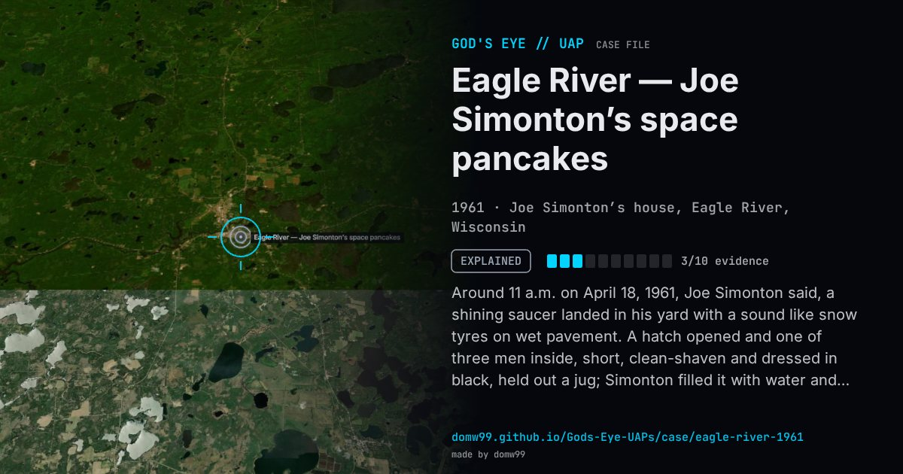

Eagle River — Joe Simonton’s space pancakes

Around 11 a.m. on April 18, 1961, Joe Simonton said, a shining saucer landed in his yard with a sound like snow tyres on wet pavement. A hatch opened and one of three men inside, short, clean-shaven and dressed in black, held out a jug; Simonton filled it with water and was handed three cakes about three inches across. The craft took off to the south in seconds, with a blast that bent a pine tree. He ate one cake (“like cardboard”) and gave the others to the local judge, Frank Carter, a member of the civilian UFO group NICAP. The story ran worldwide; Hynek and an Air Force officer interviewed Simonton, and a cake went to a laboratory. A supermarket soon offered shoppers a chance to meet him at an Aunt Jemima pancake promotion.
Explanation
The Air Force, which sent J. Allen Hynek to Eagle River, recorded it as “hallucination”: the investigators found Simonton sincere and in good mental health, but concluded from the inconsistencies and the lack of supporting evidence that he “suffered an hallucination followed with delusion”. A laboratory analysis of one of the cakes found an ordinary pancake of terrestrial origin.
What was seen
Shape: A saucer brighter than chrome, like two soup bowls rim to rim, about 12 feet thick at the centre, with exhaust pipes around the rim
Witnesses: Joe Simonton, a plumber and chicken farmer, alone; a local insurance agent said he saw a saucer about the same time
Duration: About five minutes
Sources
- Project Blue Book file — Eagle River, Wisconsin, 18 April 1961 (Internet Archive)
- Wikipedia — Eagle River encounter
Browse
- United States
- 1960s
- Explained
- Close encounters
- Official government documents
- Physical traces
- Discs and saucers